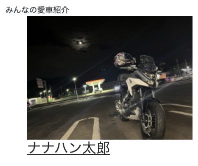
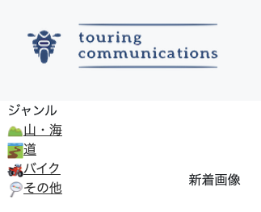

touring-communications（趣味共有SNS）
開発環境
Ruby / Ruby on Rails / MySQL / GitHub / Heroku / Visual Studio Code / Trello
-
概要
制作時間 70時間 URL https://touring-communications.herokuapp.com/ ID admin PASS 2222 -
動作テスト
テスト用アカウント
mail yuki@yuki PASS 123456a
OUTLINEアプリケーションの概要
オリジナルアプリケーションとして、自身の趣味を共有をするSNSを開発しました。
主な機能は写真投稿機能です。
トップページにアクセスすると、投稿されたものが新しい順ついて表示されています。それをクリックすると、その写真の詳細を閲覧することができます。
また、ランダムでユーザー登録時に投稿した写真も表示されます。
-
開発に至った経緯
普段SNSを利用している中で、効率的に情報を得ることができないと感じることがありました。
私はツーリングが趣味で、長期休みの際はどこに行こうかとSNSで情報を収集します。しかし、目的地や昼食場所、途中の休憩場所を探すのに苦労していました。
そこで、目的地と一緒に道中の写真も一緒に投稿できるSNSを作成したいと思いました。
-
開発で工夫したこと
ユーザー登録時に愛車の写真も投稿することで、目的地だけでなく自慢の愛車でのつながりを持てるようにしました。その愛車紹介の写真もトップページに表示されランダムで表示させることで多くの人とつながれるよう工夫もしました。
実際にあるSNSサイトを使いながら自分ならこうした方が見やすい、使いやすいを感じながら作成しています。
-
今後実装したいと思っていること
投稿内容に関連するキーワードをダグ付けする機能を設けたいと考えています。
投稿内容が多くなってくると自分の探したいものが埋もれて探しづらくなってしまうためです。
また、GoogleMapとAPI連携し目的地を地図にマッピングする機能もつけたいと思っています。これも目的地や昼食場所等を探すのに役立つと思います。